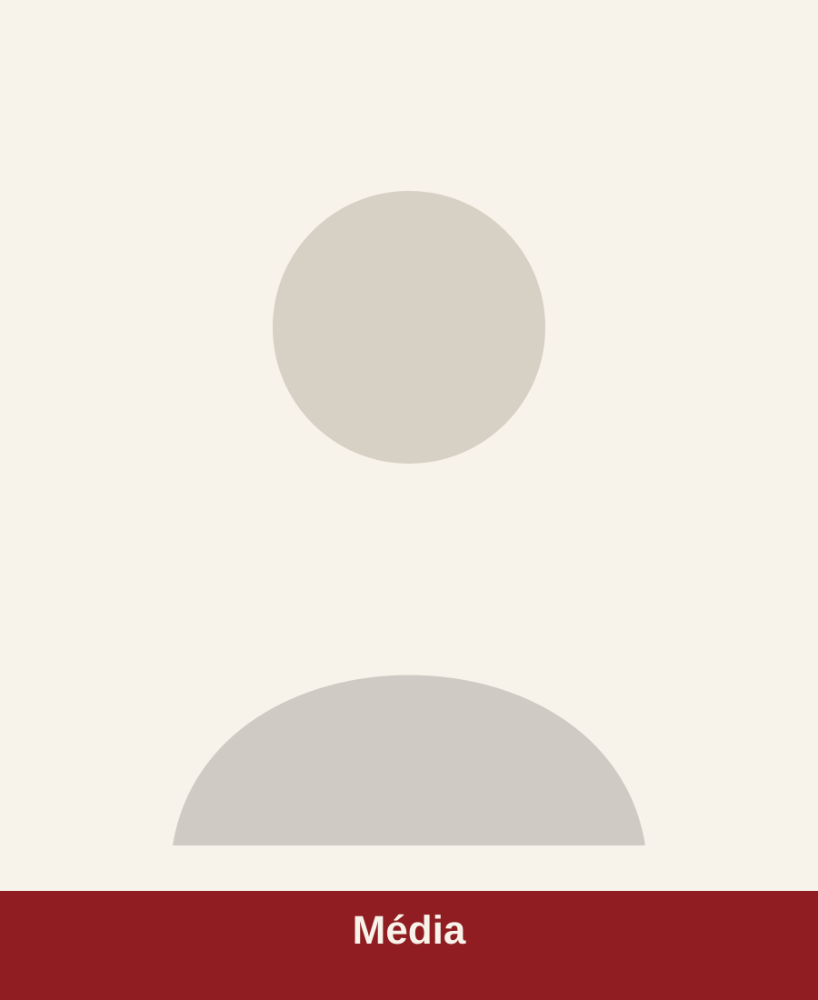

Présentation
Cadre fédéral
La WUKF France structure et accompagne les pratiques représentées, les clubs affiliés, les ligues régionales et les acteurs fédéraux.
Institution
Informations institutionnelles et organisation fédérale.
Présentation
La WUKF France structure et accompagne les pratiques représentées, les clubs affiliés, les ligues régionales et les acteurs fédéraux.
Historique
La fédération présente son organisation, ses missions et ses repères institutionnels.
Gouvernance

Fonction générique
Fonction générique
Fonction générique
Fonction générique
Organisation des commissions, périmètres et contacts.
Présentation des fonctions et de l’organisation technique.
Objectifs et orientations du projet sportif fédéral.